XDPRO
디지털트윈, 공간
정보
서버엔진 & 개발 툴
· 공간정보기반의 디지털트윈
플랫폼 구축을 위한 디지털트윈 구현의 핵심 엔진 및 제품
· 디지털트윈 서비스를 위한
공간정보 서버와 콘텐츠 제작을 위한 개발자 중심의 API 제공
· 다차원(2D/3D)
공간정보, 크로스 플랫폼을 지원하는 디지털트윈에 적합한 공간정보 서비스 제품군
- XDPRO Server
- XDPRO
Development Kit - SDK
- XDPRO 2D
- XDPRO Mobile


3차원 지형도, 시설물, 위성사진(항공사진), DEM 등 3차원 GIS DATA를 INTERNET / INTRANET 기반에서 서비스하기 위한 3차원 공간 데이터 전용 서버
Development Kit
OLE/Active-X 컴포넌트 기술을 바탕으로 개발 플랫폼 및 개발 언어에 상관없이 쉽고 간단하게 개발 목적에 맞는 3차원 GIS를 쉽게 구축할 수 있도록 만든 개발자용 라이브러리

Sandbox 기반 개발자 사이트

오픈 소스를 활용하여 Java 기반으로 개발된 엔진으로 OGC / ISO표준 공간데이터 타입을 지원하여 분석을 위한 다양한 지오프로세싱을 제공한다. 또한 GeoServer와 연동하여 OGC 웹 서비스 표준인 WPS가 가능


Mobile 3차원 표준 Spec인 OpenGL ES를 기반으로 제작된 Mobile 3차원 GIS Engine으로 GIS / NAVIGATION / LBS 등 다양한 분야에 적용 가능한 제품

특징 Features
-
인공지능 분산서버 지원인공지능 분산서버 지원
저비용 고효율기법인 IOCP기반의 접속방식 및 인공지능 분산 서버 지원
-
실시간 서비스 관리체제 지원실시간 서비스 관리체제 지원
운용 중 레이어 서비스 중지, 가동 공간 데이터 수정 등 실시간 서비스 관리 체제 지원
-
다양한 OS 지원다양한 OS 지원
UNIX, LINUX, WINDOWS 등 다양한 OS 지원
-
메모리 기반메모리 기반
서버의 메모리에 GIS공간데이터를 탑재하여 서비스하는 메모리 기반 서버
-
분산서비스분산서비스
여러 대의 서버를 연동하여 부하를 분산시키는 분산서비스 기능 제공
특징 Features
-
다양한 개발 언어 지원다양한 개발 언어 지원
Visual C++, Delphi, Visual Basic 등 다양한 개발 언어 지원
-
표준 플랫폼 지원표준 플랫폼 지원
IE 기반의Web 환경에서 운용될 수 있도록 표준 플랫폼 지원
-
JavaScript 기반 개발 가능JavaScript 기반 개발 가능
IE, Chrome, Firefox 등 Multi Browser에서 JavaScript 기반 개발 가능
-
시뮬레이션 및 분석 기능시뮬레이션 및 분석 기능
다양한 도시 계획 시뮬레이션 및 분석 기능 제공
특징 Features
-
예제 아이콘
XDPRO SDK를 처음 접하는 개발자들도 쉽게 XDPRO SDK를 활용하여 개발할 수 있도록 다양하고 구체적인 예제 제공
-
카테고리 아이콘
원하는 기능에 쉽게 접근 할수 있도록 카메라, 레이어, 지형, 분석 등으로 카테고리를 구분하여 제공
-
컴퓨터 아이콘
HTML, JS, CONSOLE, 실행화면으로 구성된 예제를 SANDBOX내에서 바로 수정하여 실행 가능
-
다운로드 아이콘
HTML, JS, CONSOLE, 실행화면으로 구성된 예제를 압축파일로 다운로드 하여 자신의 프로젝트에 적용
-
업데이트 아이콘
XDPRO SDK에 추가 되는 API에 대하여 지속적인 예제 코드 업데이트
특징 Features
-
다양한 파일 포맷 출력다양한 파일 포맷 출력
KML, GML, Shape, GeoRSS, GeoJSON, JPEG, GIF 등의 포맷 출력
-
OGC Web 서비스 표준 지원OGC Web 서비스 표준 지원
OGC Web 서비스 (WWS, WFS, WCS, WPS 등) 지원
-
분석기능 지원 및 확장분석기능 지원 및 확장
WPS(Web Processing Service) Extension을 이용하여 KOPSS에서 정의한 분석기능 지원 및 확장
특징 Features
-
Real 3D 기반의 지도 서비스Real 3D 기반의 지도 서비스
고품질의 3차원 지형, 항공영상, 3차원 시설물을 융합 가시화하여 Real 3D 기반의 지도 서비스
-
지도 용량 경량화지도 용량 경량화
고해상도 압축으로 Embedded System을 위한 지도 용량 경량화
-
다양한 모바일 기기 수용다양한 모바일 기기 수용
Mobile 3차원 표준인 OpenGL ES 를 기반으로 다양한 모바일 기기 수용
-
지원 플랫폼지원 플랫폼
iPhone OS/ Android OS
-
3차원 실사 데이터 표현 가능3차원 실사 데이터 표현 가능
Pictometry와 같은 3차원 실사 데이터 표현 가능
기능 Functions
- 동시접속자수 및 패킷 처리상황을 분석 인공지능 분산서버 지원
- 실시간 패킷의 처리속도, 사용자 접속현황 CPU 현황 분석 및 설정 가능
- 레이어 단위 별 속성 Index 및 공간 Index 생성 및 지원
- 위성사진, DEM, 지형도, 항공사진 선택적 서비스 가능
- Active-X, Java 형태의 개발도구 지원 (다양한 클라이언트 환경수용)
기능 Functions
- 대규모 3D 공간 데이터 로딩, 사용자 시점에 따른 레벨 별 출력 기능
- ORACLE, MS-SQL, MY-SQL 등RDB와 공간 데이터 간 속성 연계 및 검색 가능
- IMG, DEM, ArcGrid, MrSid 등 다양한 지형, 영상 파일 변환 가능
- KML, KMZ, GML 등 표준 포맷 지원
기능 Functions
- XDPRO SDK에서 제공하는 다양한 3차원 API를 누구나 쉽게 활용할 수 있도록 HTML, JS로 구성된 예제 코드를 제공하고,
제공된 예제 코드를 다운로드 하거나 바로 수정하여 실행해 볼 수 있는 개발자 전용 Sandbox기능을 제공함으로써 XDPRO SDK에 대한 진입장벽을 낮춰줍니다.
기능 Functions
- 공간자료 좌표체계 및 변환 지원
- 다양한 사용자 스타일 맵(SLD) 서비스 기능 제공
- 웹 환경에서 공간자료 추가, 변경, 삭제 기능 지원
- 국제 EPSG 좌표계 및 사용자 좌표계 관리기능 및 동적 변환 서비스 제공
- 표준형식의 공간질의 지원
기능 Functions
- 건물 POI 공간검색 및 Multi-touch를 이용한 직관적인 UI 지원
- 3차원 Landmark 건물 표현
- Network Streaming Service 지원